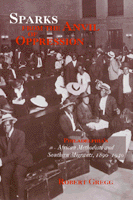

<body bgcolor="#FFFFFF" text="#000000" link="#0000FF" vlink="#CC0000" alink="#CC0000"><center><hr width="350" size="1" align="center" noshade>How the African Methodist Churches in Philadelphia coped with the Great Migration<hr width="350" size="1" align="center" noshade><p><a href="https://cdcshoppingcart.uchicago.edu/Cart/ChicagoBook.aspx?ISBN=9781566390637&&PRESS=temple" target="_top">Buy this book!</a> | <a href="https://cdcshoppingcart.uchicago.edu/Cart/Cart.aspx?PRESS=temple" target="_top">View Cart</a> | <a href="https://cdcshoppingcart.uchicago.edu/Cart/Cart.aspx?PRESS=temple" target="_top">Check Out</a></p><p></p></center><!--none//--><h1>Sparks from the Anvil of Oppression</h1>
<H2>Philadelphia's African Methodists and Southern Migrants, 1890-1940</H2>
<h3>Robert Gregg</h3>
<P>cloth 1-56639-063-X $78.50, Sep 93, <FONT COLOR=#990033>Out of Stock Unavailable</FONT>
<br>paper 1-56639-664-6 $30.95, <FONT COLOR=#990033>Available</FONT>
<br>Electronic Book 1-43990-611-4 $30.95 <FONT COLOR=#990033>Out of Stock Unavailable</FONT>
<BR> 272 pp
6x9
13&nbsp;tables 2&nbsp;figures
</P><BLOCKQUOTE><I>"Gregg's work is nicely nuanced, convincingly supported, and attractively presented.... His work will undoubtedly be useful to both social and religious historians in advancing their understanding of this
pivotal period in American (and African-American) history."</I>
<br>&#151<b><I>Journal of American History</I></b><I></I></BLOCKQUOTE>
<p>The richness of African American culture during the early years of the century emerges from Robert Gregg's wide-reaching study of African Methodist Churches, southern migrants, and expanding ghettos in Philadelphia. Contending that isolating these powerful forces distorts social history, Gregg examines their interconnected developments to reveal a new and less monolithic picture of African American communities.
<p>While some histories have charged black religious institutions with failure to help southern migrants adjust to urban life, <I>Sparks from the Anvil of Oppression</I> cites the work of African American Methodist intellectuals and ministers to illustrate the philosophy of "uplift" preached and practiced in A.M.E. churches. The church and many of its established members attempted to create community and respond to the migrants' depressed living and work environments.
<p>Class and regional differences, diversity among migrant populations, and the consolidation of the ghetto undermined attempts to create a unified black community, Gregg argues. African Methodist churches became sites of struggle for the status and power that could not be attained outside the black community.
<BR>&nbsp;<h2>Reviews</h2>
<p><I>"Building on the tradition of community studies, of E.P. Thompson, Kenneth Kusmer, and Joe William Trotter, Gregg brings an intricacy and sophistication to his analysis that is admirable."</I>
<BR>&#151<B>Emma Lapsansky</B>,
Haverford College, <I>Pennsylvania Magazine of History and Biography</I>
<p><I>"This is a valuable and insightful study. It challenges very effectively the argument that the established churches didn't help migrants and hence contributed to their 'failure to make good' in the North. The author deserves special praise for his assessment of what the Philadelphia churches actually did do, and the reasons for their failure to attract more of the newcomers. It adds much to our understanding of the
nature of the Great Migration."</I>
<BR>&#151<b>Julie Winch</B>, History, University of Massachusetts
<p><I>"The hegira of southern blacks during and after World War I is a significant watershed in African American history. Gregg's study helps break new ground by stressing the religious and cultural impact of the exodus, though the weight of his presentation is on how northern religious institutions, specifically the African Methodist churches, responded to the challenge of the arrival of the arrival of the migrants. He has used a wide range of primary sources very effectively. His examination of the records pertaining to Mother Bethel is especially interesting."</I>
<br>&#151<b>Milton Sernett</b>, Department of African American Studies, Syracuse University
<BR>&nbsp;<h2>Contents</h2><P>
<p>Maps and Tables
<br>Acknowledgments
<br>1. Introduction
<p><b>Part I: Churches and Ghettos</b>
<br>2. "Drowned by a Torrent of Migration"
<br>3. Evangelism and Social Service
<p><b>Part II: "In the Pulpit and the Pew"</b>
<br>4. Uplifting "Backward Peoples"
<br>5. "Pulpit Extension"
<br>6. Service and Prestige
<br>7. "Flaming Torches"
<p><b>Part III: the "Great Migration"</b>
<br>8. Many Promised Lands"
<br>9. The Earnest Pastor's heated Term
<br>10. "Let this Be Your Home"
<br>11. Conclusion
<p>Notes
<br>Index
</P><BR>&nbsp;<H2>About the Author(s)</H2>
<P><B>Robert Gregg</B> is Assistant Professor of History at the Richard Stockton College of New Jersey and currently a Fellow at the Shelby Cullom Davis Center for Historical Studies at Princeton University.</P>
<BR><H2>Subject Categories</H2>
<p><A HREF="/tempress/american.html" TARGET="_top">American Studies</a>
<BR><A HREF="/tempress/african.html" TARGET="_top">African American Studies</a>
</p>
<p align="center"><a href="https://cdcshoppingcart.uchicago.edu/Cart/ChicagoBook.aspx?ISBN=9781566390637&&PRESS=temple" target="_top">Buy this book!</a> | <a href="https://cdcshoppingcart.uchicago.edu/Cart/Cart.aspx?PRESS=temple" target="_top">View Cart</a> | <a href="https://cdcshoppingcart.uchicago.edu/Cart/Cart.aspx?PRESS=temple" target="_top">Check Out</a></p><p><font face="Arial" size="1"><a href="copyright.html" onMouseOver="window.status='Web Copyright Policy';return true;" onMouseOut="window.status=''" title="Web Copyright Policy">&copy;</a> 2015 <a href="http://www.temple.edu" target="new" onMouseOver="window.status='Link to Temple University home page';return true;" onMouseOut="window.status=''" title="Link to Temple University home page">Temple University</a>. All Rights Reserved. http://www.temple.edu/tempress/titles/785_reg.html</font></p>